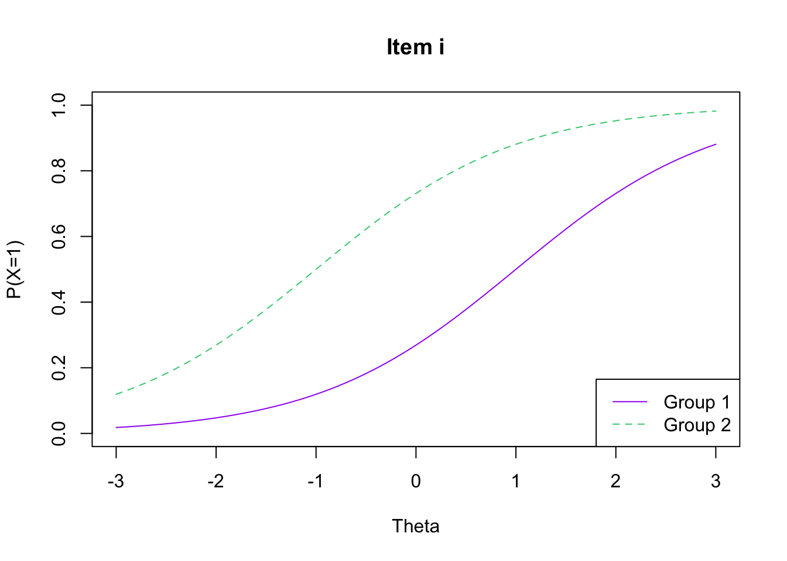
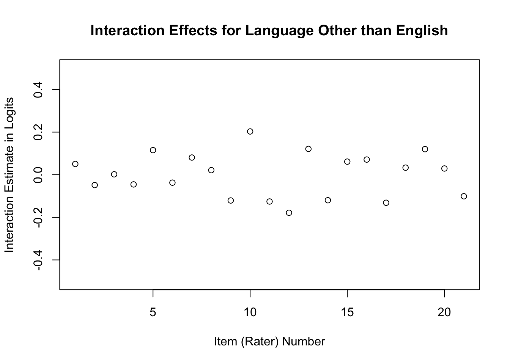

Chapter 7 Basics of Differential Item Functioning
This chapter provides a basic overview of differential item functioning (DIF) along with methods for detecting DIF with Rasch models using R. We will use the eRm package (Mair, Hatzinger, and Maier 2021) and the TAM package (Robitzsch, Kiefer, and Wu 2021) for the analyses in this chapter. We have included demonstrations for exploring DIF with dichotomous data and polytomous data using the dichotomous Rasch Model and the Partial Credit Model, respectively.
What is Differential Item Functioning (DIF)?
DIF occurs when examinees who are members of different groups (e.g., demographic subgroups) who have the same location on the latent variable have different probabilities for a response in a given category (e.g., a correct response or a rating of Agree) on an item. In the context of Rasch measurement theory (Rasch 1960), DIF means that an item has a different location (i.e., a different level of difficulty) between subgroups by more than the standard error. Rasch analyses of DIF typically focus on detecting uniform DIF, which occurs when the distance between item response functions (IRFs) is constant between subgroups.
Figure 7.1 illustrates uniform DIF between two groups of examinees for a dichotomous item (\(x = 0, 1\)). The x-axis shows examinee locations on the latent variable, and the y-axis shows the probability for a correct or positive response (P(x=1)). The dashed line shows the IRF for Group 1, and the dashed line shows IRF for Group 2. This item shows DIF because examinees who have the same location on the latent variable have different probabilities for a correct or positive response.

Figure 7.1: Uniform DIF betweem twp groups of examinees
IRF <- function(b_group1, b_group2){
colors <- c("purple", "seagreen3")
theta <- seq(-3, 3, .1)
P1 <- 1 / (1 + exp(-(theta - b_group1)))
P2 <- 1 / (1 + exp(-(theta - b_group2)))
plot(theta, P1, type="l", xlim=c(-3,3), ylim=c(0,1),
xlab="Theta", ylab="P(X=1)", col = colors[1], lty = 1,
main = "Item i")
lines(theta, P2, col = colors[2], lty = 2)
legend("bottomright", c("Group 1", "Group 2"), lty = c(1, 2),
col = c(colors[1], colors[2]))
}
IRF(b_group1 = 1, b_group2 = -1)
The interpretation and use of DIF indices varies along with the individual purpose and consequences of each assessment. As a result, it is critical that analysts consider the unique context in which they are evaluating DIF when they interpret the results from DIF analyses. In addition, it is often useful to consider DIF from multiple perspectives, including different statistical techniques for identifying DIF.
It is also important to note that when DIF occurs, it does not always imply a threat to fairness from a psychometric perspective (AERA, APA, and NCME 2014). Instead, evidence of DIF is a starting place for additional research, such as qualitative analyses of item content or the assessment context, to evaluate whether DIF may reflect a threat to fairness. Some authors (e.g., Myers et al. (2006)) refer to this distinction as statistical DIF, which occurs when an item is flagged for DIF based on statistical criteria versus substantive DIF, which occurs when an item has been flagged for DIF based on statistical criteria and substantive review of the item indicates that a construct other than the construct of interest for the assessment is responsible for differences in item difficulty between subgroups.
In this chapter, we demonstrate two techniques that analysts can use to identify DIF within the Rasch measurement theory framework. Our presentation is not exhaustive and there are many other methods that can be used to supplement those that we demonstrate here. We encourage interested readers to consult the resources listed throughout the chapter as well as the resource list at the end of this chapter to learn more about best practices for identifying DIF within the context of Rasch measurement theory, as well as in other measurement frameworks.
Popular Methods for Identifying DIF with Rasch models
From the perspective of Rasch measurement theory, DIF poses a threat to measurement quality because it implies a lack of invariance. When DIF occurs, the requirements for invariant measurement are not met (see Chapter 1). Accordingly, DIF can be interpreted as not only a potential threat to fairness, but also as a violation of Rasch model requirements (Hagquist and Andrich 2017a).
Researchers have proposed several methods for identifying DIF within the framework of Rasch measurement theory. Methods that are routinely used in practical applications of Rasch measurement theory can be broadly classified into two approaches: (1) Comparison of group-specific item estimates, and (2) Interaction analyses between item locations and examinee subgroup indicators. In recent methodological work, several researchers have proposed other methods for detecting DIF within the Rasch framework, such as methods based on analysis of variance with model residuals (e.g., Hagquist and Andrich (2017b)) and tree-based methods (Komboz, Strobl, and Zeileis 2018). However, these methods are relatively less common in current applied literature. We encourage interested readers to explore these approaches as well as those that we present here in order to develop a more complete understanding of Rasch-based methods for identifying DIF.
In addition to methods based on Rasch measurement theory, there are numerous other approaches to detecting DIF that are beyond the scope of this volume. We encourage readers who are interested in learning more about DIF to consult the resources that we have listed at the end of this chapter.
Comparing Group-Specific Item Estimates
A popular method for identifying DIF within the framework of Rasch measurement theory is to calculate group-specific estimates of item difficulty, and compare those estimates to see if they are meaningfully different. In order to meaningfully compare item difficulty estimates between two groups, it is necessary to adjust (i.e., equate) the item difficulty measures for one group so that they are on the same scale as the item difficulty measures for the second group. The equated differences in item difficulty estimates reflect the distance between group-specific IRFs (Raju 1988).
Some software programs, including the eRm package (Mair, Hatzinger, and Maier 2021), perform this adjustment procedure automatically as part of their DIF functions. In other cases, the analyst needs to perform the adjustment procedure manually before item locations can be compared. For a discussion of the adjustment procedure, please see (Luppescu 1995).
After group-specific item difficulty estimates have been calculated and adjusted for the purpose of comparison, it is necessary to consider the degree to which differences in item difficulty estimates are large enough to indicate substantial DIF. Researchers who use Rasch models to evaluate DIF evaluate these differences using several approaches. For example, many researchers calculate the difference between item difficulty estimates as:
\[\begin{equation}\tag{7.1}\delta_{i 1}-\delta_{i 2}\end{equation}\]
In Equation 7.1, \(\delta_{i 1}\) is the group-specific item difficulty estimate for Group 1, and \(\delta_i2\) is the group-specific item difficulty estimate for Group 2. Researchers sometimes interpret the difference in item difficulty in logits as an effect size, where larger differences indicate more substantial DIF. Wright and Douglas (1975) recommended that researchers use a critical value of 0.5 logits (i.e., the “half-logit rule”) to identify DIF that warrants further investigation. This recommendation is based on the typical range of item difficulty for achievement tests (around -2.5 logits to around 2.5 logits), because a difference of 0.5 logits reflects 10% of the item difficulty scale. Differences of this magnitude may impact the accuracy of the measurement procedure between subgroups. Other researchers have proposed smaller critical values, such as (Engelhard and Myford 2003), who recommended a difference of 0.3 logits to identify meaningful DIF.
In the Winsteps software manual, John Michael Linacre (2020) proposed guidelines for interpreting differences in item difficulty that reflect the Delta Index from ETS (Dorans and Holland 1993). He noted that differences less than 0.43 logits can be interpreted as negligible DIF (Category A DIF), differences between 0.43 logits and 0.63 logits can be interpreted as slight-to-moderate DIF (Category B DIF), and differences equal to or greater than 0.64 logits as substantial DIF (Category C DIF). These recommendations reflect a conversion between the Delta index that ETS uses to report Mantel-Haenszel DIF statistics (Holland and Thayer 1988) and logits, where one Delta unit is equal to 0.426 logits.
In some cases, it may also be useful to use a statistical hypothesis test to evaluate whether the difference in item difficulty estimates between groups is larger than what could be expected by chance. Many researchers use the Rasch separate calibration t-test method (Wright and Stone 1979). This test evaluates the difference between item difficulty estimates calculated from separate calibrations of the same item that have been equated to a common scale. The t-test is defined as:
\[\begin{equation}\tag{7.2}t_{i}=\frac{\delta_{i 1}-\delta_{i 1}}{s_{p}\sqrt{\frac{1}{n_{1}}+\frac{1}{n_{2}}}}\end{equation}\]
In Equation 7.2, \(\delta_{i1}\) and \(\delta_{i2}\) are defined as in Equation 7.1, and sp is the pooled variance, defined as:
\[\begin{equation}\tag{7.3}s_{p}=\sqrt{\frac{\left(n_{1}-1\right) s_{1}^{2}+\left(n_{2}-1\right) s_{2}^{2}}{\left(n_{1}+n_{2}\right)-2}}\end{equation}\]
In Equation 7.3, \(s_1\) is the standard error of estimate for \(\delta_{i1}\), \(s_2\) is the standard error of estimate for \(\delta_{i2}\), \(n_1\) is the number of test-takers in Group 1, and \(n_2\) is the number of test-takers in Group 2 (Smith 1996). The resulting t-statistic can be interpreted using a p-value.
When more than two groups are of interest, it is possible to apply the t-test method to compare pairs of groups (e.g., Group A compared to Group B; Group B compared to Group C; Group C compared to Group A). As needed, corrections such as Bonferroni adjustments can be used to reduce the chance of Type 1 errors from multiple comparisons.
Interaction Analyses
Another method for identifying DIF is to examine interactions between item difficulty and examinee subgroup identifiers using the Many-Facet Rasch Model (MFRM), John M. Linacre (1989) see Chapter 6. Including interaction terms in MFRMs allows researchers to test the null hypothesis that the calibrations of elements within one facet (e.g., items) are invariant across levels of another facet (e.g., subgroups). For the purpose of identifying DIF, researchers can examine the magnitude of the interaction effect between individual items and relevant examinee subgroups, where larger interaction terms indicate larger differences in item difficulty parameters for the subgroup of interest.
For example, the following formulation of the MFRM could be used to evaluate DIF:
\[\begin{equation}\tag{7.4}\ln \left(\frac{P_{n i g(x=k)}}{P_{n i g(x=k-1)}}\right)=\left(\theta_{n}-\delta_{i}-\gamma_{g}-\tau_{k}\right)-\delta_{i} \gamma_{g}\end{equation}\]
In Equation 7.4, \(\theta_n\) is the location of Examinee \(n\), \(\delta_i\) is the location of item \(i\), \(\gamma_g\) is the location of examinee subgroup \(g\), and \(\tau_k\) is the rating scale category threshold between category \(k\) and category \(k - 1\). The model also includes the interaction between item locations and subgroup locations: \(\delta_i\)*\(\gamma_g\). The interaction term tests the null hypothesis that item locations are invariant across examinee subgroups, against the alternative hypothesis that item locations are different across examinee subgroups, which would be evidence of DIF.
7.1 Detecting Differential Item Functioning in R for Dichotomous Items
In this section, we provide a step-by-step demonstration of the two approaches to DIF analyses for dichotomous item response data. We encourage readers to use the example data set that is provided in the online supplement to conduct the analysis along with us.
7.1.1 Example Data: Transitive Reasoning
The example data for this section is the Transitive Reasoning Data that we used in Chapter 2. The data include a group of 425 children’s scored responses to assessment items designed to measure their ability to reason about the relationships among physical objects. Along with student responses, the Transitive Reasoning data file includes students’ grade levels, ranging from Grade 2 to Grade 6. We will use students’ grade level as the basis for our DIF analyses. Please see Chapter 2 for additional details about these data.
Prepare for the Analyses
We will use the Extended Rasch Modeling or eRm package (Mair, Hatzinger, and Maier 2021) and the Test Analysis Modules or TAM package (Robitzsch, Kiefer, and Wu 2021) to demonstrate DIF analyses in this chapter.
# install.packages("eRm")
library("eRm")
# install.packages("eRm")
library("TAM")Now that we have installed and loaded the packages to our R session, we are ready to import the data. We will use the function read.csv() to import the comma-separated values (.csv) file that contains the Transitive Reasoning assessment data. We encourage readers to use their preferred method for importing data files into R or R Studio.
Please note that if you use read.csv() to import the data, you will first need to specify the file path to the location at which the data file is stored on your computer or set your working directory to the folder in which you have saved the data.
We will import the data using read.csv() and store it in an object called transreas.
transreas <- read.csv("transreas.csv")Next, we need to identify the variable that contains examinees’ subgroup membership identifiers for our DIF analysis. In our example analysis, we will conduct DIF analyses related to students’ grade level. The Transitive Reasoning assessment data includes five grade levels (Grade 2 through Grade 6). For the sake of a simple illustration, we will re-code these grade levels into two groups: (1) Lower Elementary students (Grade 2 through Grade 4) and Upper Elementary students (Grade 5 and Grade 6).
The following code creates a vector object that includes students’ membership in the Lower Elementary or Upper Elementary groups. Then, we use the table() function to generate a frequency table for this variable.
transreas.grade.group <- ifelse(transreas$Grade <= 4, 1, 2)
table(transreas.grade.group)## transreas.grade.group
## 1 2
## 253 172DIF Method 1: Compare Item Locations between Subgroups
First, we will conduct a DIF analysis by comparing the difficulty estimate of each Transitive Reasoning item between our two student subgroups. We will use the dichotomous Rasch model (see Chapter 2) to estimate item difficulty locations.
The eRm package includes a function that allows researchers to calculate group-specific item difficulty estimates after the item responses have been analyzed for the complete sample. Accordingly, we will begin our analysis by estimating item and person locations for the complete sample of students who completed the Transitive Reasoning assessment using the Rasch model.
To get started with the DIF analysis in eRm, we need to isolate the response matrix from our data and then apply the dichotomous Rasch model to the responses. The following code completes these steps. Please refer to Chapter 2 for a detailed description of procedures for applying and interpreting the results from the dichotomous Rasch model.
## Isolate the response matrix:
transreas.responses <- subset(transreas, select = -c(Student, Grade))
## Apply the model to the data
transreas.RM <- RM(transreas.responses)Next, we will calculate subgroup-specific item difficulty values using the Waldtest() function from eRm. We will specify the transreas.grade.group object as the grouping variable for our analysis.
subgroup_diffs <- Waldtest(transreas.RM, splitcr = transreas.grade.group)This analysis saves numerous details to the object called subgroup_diffs. Let’s create new objects with the group-specific item difficulties:
subgroup_1_diffs <- subgroup_diffs$betapar1
subgroup_2_diffs <- subgroup_diffs$betapar2We can examine the differences between the subgroup-specific item difficulties by subtracting the two sets of values.
subgroup_1_diffs - subgroup_2_diffs## beta task_01 beta task_02 beta task_03 beta task_04 beta task_05 beta task_06
## 0.3648935 0.5457623 0.4623913 0.2437839 -0.2048691 -0.5690487
## beta task_07 beta task_08 beta task_09 beta task_10
## -0.3396100 -0.3781807 0.1190287 -0.2441513We can see that there are some items that were easier for Lower Elementary students (positive differences) and other items that were easier for Upper Elementary students (negative differences). In addition, the difference in logit-scale locations for two items (Task 2 and Task 6) exceed the “half-logit” rule, suggesting potentially meaningful DIF. The difference for Task 3 approximates this value as well.
To better understand the significance of differences in item difficulty between subgroups, we will examine the results from the statistical hypothesis test for the item difficulty comparisons. In the eRm package, item comparisons are reported using z-statistics instead of the Wright and Stone t-test statistics that we discussed earlier. With large sample sizes, t statistics approximate z statistics. Let’s create an object called comparisons in which we store these results.
comparisons <- as.data.frame(subgroup_diffs$coef.table)For reporting purposes, it is often helpful to construct a table that includes subgroup-specific item difficulty values along with the results from the statistical hypothesis test. The following code saves these results in an object called comparison.results, and then prints the object to the console.
comparison.results <- cbind.data.frame(subgroup_1_diffs, subgroup_diffs$se.beta1,
subgroup_2_diffs, subgroup_diffs$se.beta2,
comparisons)
# Name the columns of the results
names(comparison.results) <- c("Subgroup_1_Difficulty", "Subgroup_1_SE",
"Subgroup_2_Difficulty", "Subgroup_2_SE",
"Z", "p_value")
comparison.results## Subgroup_1_Difficulty Subgroup_1_SE Subgroup_2_Difficulty
## beta task_01 1.35779188 0.2571262 0.9928984
## beta task_02 -0.06336358 0.1702630 -0.6091259
## beta task_03 0.57207888 0.1997716 0.1096876
## beta task_04 -0.36534197 0.1607645 -0.6091259
## beta task_05 -0.39081998 0.1600840 -0.1859509
## beta task_06 2.02881377 0.3290900 2.5978625
## beta task_07 -0.09273638 0.1692194 0.2468736
## beta task_08 1.79979029 0.3017318 2.1779710
## beta task_09 -2.89136085 0.1697609 -3.0103896
## beta task_10 -1.95485207 0.1483956 -1.7107008
## Subgroup_2_SE Z p_value
## beta task_01 0.3383101 0.8587094 0.39050087
## beta task_02 0.2169509 1.9789435 0.04782237
## beta task_03 0.2562673 1.4230349 0.15472603
## beta task_04 0.2169508 0.9028236 0.36661953
## beta task_05 0.2375660 -0.7151527 0.47451472
## beta task_06 0.6541650 -0.7770931 0.43710383
## beta task_07 0.2662718 -1.0764419 0.28172969
## beta task_08 0.5424163 -0.6092896 0.54233252
## beta task_09 0.2095098 0.4414133 0.65891380
## beta task_10 0.1922855 -1.0051980 0.31480152From these results, we see that there is one item with a statistically significant difference between subgroups based on \(p < 0.05\): Task 2.
As an additional interpretation aid, we will construct a scatterplot that shows the alignment between item difficulty estimates for the two subgroups in our analysis. Because the procedure that we used to calculate item difficulties specific to each subgroup has already adjusted the difficulties to be on the same scale, we don’t need to apply any transformation. The following code will create a scatterplot with 95% confidence bands to highlight items that are significantly different between the subgroups.
## Calculate values for constructing the confidence bands:
mean.1.2 <- ((subgroup_1_diffs - mean(subgroup_1_diffs))/2*sd(subgroup_1_diffs) +
(subgroup_2_diffs - mean(subgroup_2_diffs))/2*sd(subgroup_2_diffs))
joint.se <- sqrt((subgroup_diffs$se.beta1^2/sd(subgroup_1_diffs)) +
(subgroup_diffs$se.beta2^2/sd(subgroup_2_diffs)))
upper.group.1 <- mean(subgroup_1_diffs) + ((mean.1.2 - joint.se )*sd(subgroup_1_diffs))
upper.group.2 <- mean(subgroup_2_diffs) + ((mean.1.2 + joint.se )*sd(subgroup_2_diffs))
lower.group.1 <- mean(subgroup_1_diffs) + ((mean.1.2 + joint.se )*sd(subgroup_1_diffs))
lower.group.2 <- mean(subgroup_2_diffs) + ((mean.1.2 - joint.se )*sd(subgroup_2_diffs))
upper <- cbind.data.frame(upper.group.1, upper.group.2)
upper <- upper[order(upper$upper.group.1, decreasing = FALSE),]
lower <- cbind.data.frame(lower.group.1, lower.group.2)
lower <- lower[order(lower$lower.group.1, decreasing = FALSE),]
## Construct the scatterplot:
plot(subgroup_1_diffs, subgroup_2_diffs, xlim = c(-4, 4), ylim = c(-4, 4),
xlab = "Lower Elementary", ylab = "Upper Elementary", main = "Lower Elementary Measures plotted against Upper Elementary Measures", cex.main = .8)
abline(a = 0, b = 1, col = "purple")
par(new = T)
lines(upper$upper.group.1, upper$upper.group.2, lty = 2, col = "red")
lines(lower$lower.group.1, lower$lower.group.2, lty = 2, col = "red")
legend("bottomright", c("Item Location", "Identity Line", "95% Confidence Band"),
pch = c(1, NA, NA), lty = c(NA, 1, 2), col = c("black", "purple", "red"), cex = .8)
In this scatterplot, item difficulty estimates for the Lower Elementary group are plotted along the x-axis, and item difficulty estimates for the Upper Elementary group are plotted along the y-axis. Dashed lines show a 95% confidence interval beyond which the differences in item difficulty estimates are statistically significant. Items that are located above the identity line have higher locations (i.e., are more difficult) for students in the Upper Elementary group, and items that are located below the identity line are more difficult for students in the Lower Elementary group.
DIF Method 2: Interaction Analysis
Next, we will conduct a DIF analysis with the Transitive Reasoning data using the interaction analysis approach based on the Many-Facet Rasch Model (MFRM; see Chapter 6). To do this, we will use the TAM package (Robitzsch, Kiefer, and Wu 2021) to specify a MFRM that includes an interaction term between item difficulty and student subgroup membership.
To get started with the interaction analysis with the MFRM, we need to isolate the response matrix from our data and then specify the model. The following code completes these steps. Please refer to Chapter 6 for a detailed description of procedures for applying and interpreting the results from the MFRM.
## Specify the facets in the model (grade-level subgroup) as a data.frame object
facets <- as.data.frame(transreas.grade.group)
facets <- facets[,"transreas.grade.group", drop=FALSE]
## Identify the object of measurement (students)
students <- transreas$Student
## Identify the response matrix:
ratings <- transreas.responses
## Specify the model equation with the interaction term:
transreas_MFRM_equation <- ~ item + transreas.grade.group + (item*transreas.grade.group)
## Apply the model to the responses:
transreas_MFRM <- tam.mml.mfr(resp = ratings, facets = facets, formulaA = transreas_MFRM_equation, pid = students, constraint = "items", verbose = FALSE)The estimates from the MFRM include values for each item, subgroup, and the interaction between each item and subgroup. We will store all of the facet estimates in an object called facet.estimates, and then store the results for each facet in separate objects for easier manipulation.
facet.estimates <- transreas_MFRM$xsi.facets
item.estimates <- subset(facet.estimates, facet.estimates$facet == "item")
subgroup.estimates <- subset(facet.estimates, facet.estimates$facet == "transreas.grade.group")
interaction.estimates <- subset(facet.estimates, facet.estimates$facet == "item:transreas.grade.group")Our main focus is on the interaction results. We can examine the relative magnitude of each interaction term by plotting the values in a simple scatterplot. The first ten values in the interaction.estimates object show the interaction between each item and group 1 (Lower Elementary), and the second ten values show the interaction between each item and group 2 (Upper Elementary). We will construct separate plots for each subgroup.
plot(interaction.estimates$xsi[1:10], main = "Interaction Effects for Lower Elementary Students", ylab = "Interaction Estimate in Logits", xlab = "Item Number", ylim = c(-0.5, 0.5))
plot(interaction.estimates$xsi[11:20], main = "Interaction Effects for Upper Elementary Students", ylab = "Interaction Estimate in Logits", xlab = "Item Number", ylim = c(-0.5, 0.5))
The interaction estimates are reported on the same logit scale as the item and person estimates. Values equal to zero indicate no interaction between item difficulty and subgroup membership. Positive values indicate that an item was relatively easier for a given subgroup compared to its overall location estimate. Negative values indicate that an item was relatively more difficult for a given subgroup compared to its overall location estimate.
We can examine the results and see that the largest interaction terms were observed for Task 2 and Task 6. Task 2 was more difficult for Lower Elementary students compared to Upper Elementary students. The opposite pattern was true for Task 6, which was easier for Lower Elementary Students compared to Upper Elementary students.
7.2 Detecting Differential Item Functioning in R for Polytomous Items
In this section, we demonstrate some basic procedures for detecting DIF with item responses that are scored in more than two categories (i.e., polytomous items). Specifically, we will illustrate DIF analyses based on the Partial Credit Model (Masters 1982), See Chapter 5. To do this, we will use the style ratings data that we used in the first illustration in Chapter 6. Most of the procedures for the analyses in this section mirror those from the illustrations with the dichotomous Rasch model earlier in this chapter. As a result, we provide relatively less detail in this section except where information is needed to highlight important differences.
7.2.1 Example Data: Style Ratings
The example data for this section are 21 rater judgments of the style of 372 students’ written compositions that were collected during a middle-grades writing assessment in the United States. We analyzed these data in Chapter 6. The minimum rating from each rater was \(x = 0\), and the maximum rating was \(x = 3\). The example data include two demographic subgroups related to students’ language background: Subgroup 1 (language = 1) indicates that students’ best language is a language other than English, and subgroup 2 (language = 2) indicates that students’ best language is English. We will use students’ language subgroup membership as the basis for our DIF analyses.
For the sake of illustration, we will treat the raters as “pseudo-items” in our analysis. DIF indicators will highlight individual raters who exhibit systematic differences in severity between student subgroups, after controlling for students’ location on the latent variable.
Prepare for the Analyses
As we did in the first example, we will use two packages for our polytomous DIF analyses: eRm (Mair, Hatzinger, and Maier 2021) and TAM (Robitzsch, Kiefer, and Wu 2021). Please ensure that these packages have been installed and loaded into the R environment (R Core Team 2019) before proceeding with the analyses.
Next, we will import the style ratings and prepare for the analysis. We will isolate the response matrix and identify the subgroup variable (language).
style <- read.csv("style_ratings.csv")
ratings <- subset(style, select = -c(student, language))DIF Method 1: Compare Item Locations between Subgroups
It is possible to use the same approach to compare item difficulty between subgroups with polytomous data as with dichotomous data. The major difference is that, with polytomous data, item difficulty estimates include rating scale category thresholds. In this illustration, we will demonstrate how to compare the difficulty of rating scale category thresholds between subgroups, and how to compare overall item difficulty estimates.
For the sake of illustration, we use the Partial Credit Model (PCM), (Masters 1982), (see Chapter 5) for our DIF analyses. However, similar analyses can also be performed using the Rating Scale Model (RSM), (Andrich 1978) (see Chapter 4).
To get started with the DIF analysis, we need to apply the PCM to the style ratings.
PC_model <- PCM(ratings)The estimation procedure for polytomous data results in item-specific estimates of rating scale category thresholds. If you want to compare the threshold locations between subgroups, you can use: subgroup_diffs <- Waldtest(PC_model, splitcr = subgroups) to generate the DIF results specific to item-category thresholds, and then proceed as in the first illustration in this chapter. However, if you want to make comparisons at the overall item level, you will need to calculate item difficulty estimates and standard errors for the overall item. In our example, we are treating raters as “psedo-items,” so the overall item estimates will actually be rater severity estimates.
First, we identify subgroup classification variable that we will use for our DIF analysis. In our example, this is the student language variable.
subgroups <- style$languageNext, we will calculate subgroup-specific item difficulty (rater severity) estimates. We will store these values in objects called group1_item.diffs.overall and group1_item.diffs.overall.
group1_item.diffs.overall <- NULL
group2_item.diffs.overall <- NULL
responses.g <- cbind.data.frame(subgroups, ratings)
responses.g1 <- subset(responses.g, responses.g$subgroups == 1)
responses.g2 <- subset(responses.g, responses.g$subgroups == 2)
subgroup_diffs <- Waldtest(PC_model, splitcr = subgroups)
for(item.number in 1:ncol(ratings)){
n.thresholds.g1 <- length(table(responses.g1[, item.number+1]))-1
group1_item.diffs.overall[item.number] <- mean(subgroup_diffs$betapar1[((item.number*(n.thresholds.g1))-(n.thresholds.g1-1)):
(item.number*(n.thresholds.g1))])*-1
n.thresholds.g2 <- length(table(responses.g2[, item.number+1]))-1
group2_item.diffs.overall[item.number] <- mean(subgroup_diffs$betapar2[((item.number*(n.thresholds.g2))-(n.thresholds.g2-1)):
(item.number*(n.thresholds.g2))])*-1
}We can view the group-specific item difficulty (rater severity) estimates by printing them to the console.
group1_item.diffs.overall## [1] -0.4879483 -1.6685347 0.4046874 -0.2173740 -1.0037163 -1.0198568
## [7] -0.6036101 0.9691077 2.7159392 -0.8263795 -0.6954105 -0.8690388
## [13] -1.0935391 0.5013196 -1.9835298 0.6158012 0.4703671 0.5245534
## [19] 1.8621749 1.2878600 1.1171273group2_item.diffs.overall## [1] -0.47182824 -1.09475957 0.02793690 0.26851229 -1.86361946 -0.54677268
## [7] -0.52376081 0.57629338 2.55640283 -1.98991035 -0.01255957 -0.24059455
## [13] -1.05035379 0.97971490 -1.75389400 0.06969827 0.78191084 0.34034134
## [19] 1.16799459 1.14577258 1.63347510To compare these values, we need to calculate overall standard errors for each item (rater). In the following code, we save these values in objects called group1_item.se.overall and group2_item.se.overall.
group1_item.se.overall <- NULL
group2_item.se.overall <- NULL
responses.g <- cbind.data.frame(subgroups, ratings)
responses.g1 <- subset(responses.g, responses.g$subgroups == 1)
responses.g2 <- subset(responses.g, responses.g$subgroups == 2)
subgroup_diffs <- Waldtest(PC_model, splitcr = subgroups)
for(item.number in 1:ncol(ratings)){
n.thresholds.g1 <- length(table(responses.g1[, item.number+1]))-1
group1_item.se.overall[item.number] <- mean(subgroup_diffs$se.beta1[((item.number*(n.thresholds.g1))-(n.thresholds.g1-1)):
(item.number*(n.thresholds.g1))])
n.thresholds.g2 <- length(table(responses.g2[, item.number+1]))-1
group2_item.se.overall[item.number] <- mean(subgroup_diffs$se.beta2[((item.number*(n.thresholds.g2))-(n.thresholds.g2-1)):
(item.number*(n.thresholds.g2))])
}Then, we will calculate test statistics (\(Z\)) for the differences in overall item difficulties. We will print the results to the console.
z <- (group1_item.diffs.overall - group2_item.diffs.overall)/
sqrt(group1_item.se.overall^2 + group2_item.se.overall^2)
z## [1] -0.02664874 -0.85932508 0.62997905 -0.80736274 1.36218140 -0.75197550
## [7] -0.12854486 0.67861431 0.28401849 1.89639423 -1.13050332 -1.03552438
## [13] -0.06716818 -0.82354357 -0.35040548 0.88195315 -0.51329786 0.31338943
## [19] 1.21102675 0.24832588 -0.90554145Finally, we will construct a scatterplot of item (rater) measures with 95% confidence interval bands for the two subgroups.
## First, calculate values for constructing the confidence bands:
mean.1.2 <- ((group1_item.diffs.overall - mean(group1_item.diffs.overall))/2*sd(group1_item.diffs.overall) +
(group2_item.diffs.overall - mean(group2_item.diffs.overall))/2*sd(group2_item.diffs.overall))
joint.se <- sqrt((group1_item.se.overall^2/sd(group1_item.diffs.overall)) +
(group2_item.se.overall^2/sd(group2_item.diffs.overall)))
upper.group.1 <- mean(group1_item.diffs.overall) + ((mean.1.2 - joint.se )*sd(group1_item.diffs.overall))
upper.group.2 <- mean(group2_item.diffs.overall) + ((mean.1.2 + joint.se )*sd(group2_item.diffs.overall))
lower.group.1 <- mean(group1_item.diffs.overall) + ((mean.1.2 + joint.se )*sd(group1_item.diffs.overall))
lower.group.2 <- mean(group2_item.diffs.overall) + ((mean.1.2 - joint.se )*sd(group1_item.diffs.overall))
upper <- cbind.data.frame(upper.group.1, upper.group.2)
upper <- upper[order(upper$upper.group.1, decreasing = FALSE),]
lower <- cbind.data.frame(lower.group.1, lower.group.2)
lower <- lower[order(lower$lower.group.1, decreasing = FALSE),]
## make the scatterplot:
plot(group1_item.diffs.overall, group2_item.diffs.overall, xlim = c(-4, 4), ylim = c(-4, 4),
xlab = "Language Other than English", ylab = "English", main = "Language-other-than-English Measures \n plotted against English Measures")
abline(a = 0, b = 1, col = "purple")
par(new = T)
lines(upper$upper.group.1, upper$upper.group.2, lty = 2, col = "red")
lines(lower$lower.group.1, lower$lower.group.2, lty = 2, col = "red")
legend("bottomright", c("Item Location", "Identity Line", "95% Confidence Band"),
pch = c(1, NA, NA), lty = c(NA, 1, 2), col = c("black", "purple", "red"))
DIF Method 2: Interaction Analysis
Next, we will conduct a DIF analysis with the style ratings data using the interaction analysis approach based on the Many-Facet Rasch Model (MFRM; see Chapter 6). We will use the TAM package (Robitzsch, Kiefer, and Wu 2021) to specify a MFRM that includes an interaction term between rater severity and student subgroup membership.
The following code applies the MFRM to the style rating data. Please refer to Chapter 6 for a detailed description of procedures for applying and interpreting the results from the MFRM.
## Specify the facets in the model (language subgroup) as a data.frame object
facets <- style[,"language", drop=FALSE]
## Identify the object of measurement (students)
students <- style$student
## Identify the response matrix:
ratings <- style[, -c(1:2)]
## Specify the model equation with the interaction term:
style_PC_MFRM_equation <- ~ item + language + item:step + (item*language)
## Apply the model to the responses:
style_MFRM <- tam.mml.mfr(resp = ratings, facets = facets, formulaA = style_PC_MFRM_equation, pid = students, constraint = "items", verbose = FALSE)Next, we store all of the facet estimates in an object called facet.estimates, and then store the results for each facet in separate objects for easier manipulation. Note that the item.estimates object actually includes rater severity estimates.
facet.estimates <- style_MFRM$xsi.facets
item.estimates <- subset(facet.estimates, facet.estimates$facet == "item")
subgroup.estimates <- subset(facet.estimates, facet.estimates$facet == "language")
threshold.estimates <- subset(facet.estimates, facet.estimates$facet == "item:step")
interaction.estimates <- subset(facet.estimates, facet.estimates$facet == "item:language")We can examine the relative magnitude of each interaction term by plotting the values in a simple scatterplot. The first 21 values in the interaction.estimates object show the interaction between each rater and group 1 (language other than English), and the second ten values show the interaction between each rater and group 2 (English). We will construct separate plots for each subgroup.
plot(interaction.estimates$xsi[1:21], main = "Interaction Effects for Language Other than English", ylab = "Interaction Estimate in Logits", xlab = "Item (Rater) Number", ylim = c(-0.5, 0.5))
plot(interaction.estimates$xsi[22:42], main = "Interaction Effects for English", ylab = "Interaction Estimate in Logits", xlab = "Item (Rater) Number", ylim = c(-0.5, 0.5))
7.3 Exercise
There are two exercises for this chapter. The first exercise uses dichotomous data, and the second exercise uses polytomous data.
The Exercise 7A data include responses from 350 students in two subgroups (group 1 and group 2) who responded to a multiple-choice assessment with 20 items. The items were scored such that \(x=1\) indicates a correct response and \(x=2\) indicates an incorrect response. Try analyzing the data for evidence of DIF.
The Exercise 7B data include responses from 400 participants from two subgroups (group 1 and group 2) to a survey with 25 items. Participants used a four-category rating scale (\(x = 0, 1, 2, 3\)) to respond to each item. Try analyzing the data for evidence of DIF.